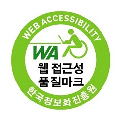

모든 사용자(비장애인, 장애인, 노인, 어린이 등)가 차별없이 이용할 수 있어야 한다.
현실적으로 시각장애인을 주 대상으로 하며, 대한민국에는 장애인 차별을 금지하는 법이 있다.
웹사이트에 접근하는 모든 통신기기(운영체제, 브라우저)의 환경과 관계없이 원활히 이용할 수 있어야 한다.
현실적으로 대한민국에서는 크로스브라우징이 중요하다.

의미에 맞는 HTML태그를 적절히 사용하여 웹페이지 제작.
신체발부 수지부모
맹자 가라사대 수업 끝나면 집에 일찍 가자